| 開催日時 | 2026/9/13(日)～9/16(水) |
|---|---|
| 開催場所 | 国立中央青少年交流の家 |
| 集合場所 | JR三島駅（みしまえき） |
| 参加費 | 14,000円前後 (オンライン参加：0円) |
| 注意事項 | 合宿当日に18歳未満の方は参加できません |
希望調査をもとに、6thのゼミ班は以下に決定しました！
各ゼミをタップすると詳細が表示されます。
本募集は7月6日（月）23:59に締め切りました。
ご回答いただいた皆様、ありがとうございました！
「心」という複雑なシステムを数式や情報理論を使って解き明かすことを目指します。物理や情報科学の数理モデルを駆使し，精神疾患の仕組み（脳の計算メカニズムの破綻など）の解明に挑む，非常に刺激的で未開拓な分野です。
扱う本の例：
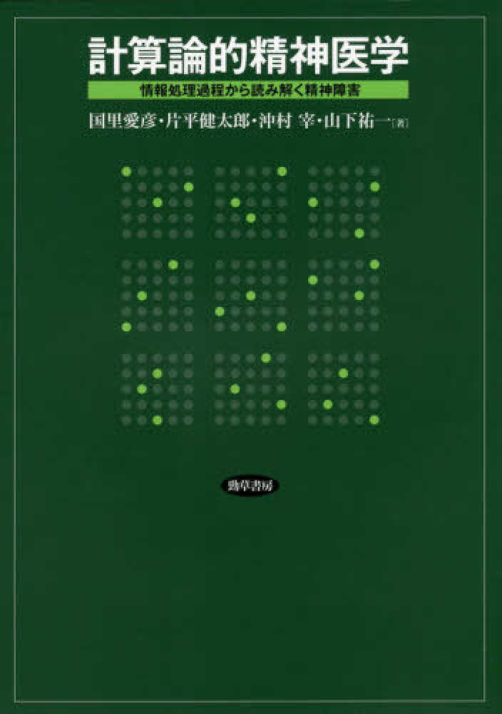
量子力学では状態の重ね合わせや測定の効果，量子もつれといった古典力学では奇妙だと思われることが起こります。これらを「不思議な現象だ」と理解を留めるのではなく，計算や通信・暗号，物理法則そのものの理解に使うのが量子情報です。
扱う本の例：
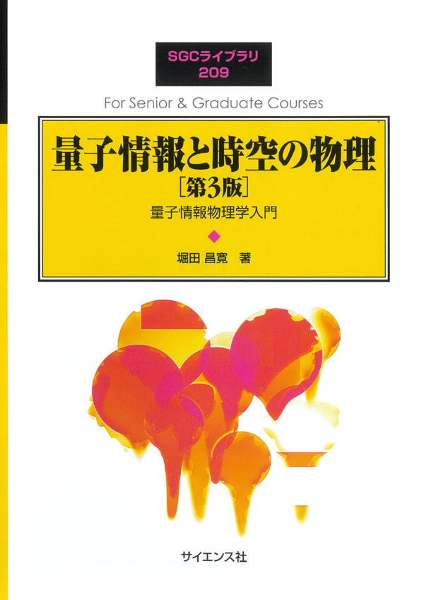
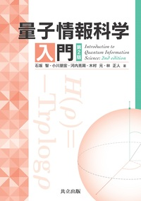
物性物理では強磁性相転移や超伝導相転移など、さまざまな相転移現象を扱います。それらを普遍的に説明するランダウ理論やスケーリング理論，およびくりこみ群について学べる，物性物理における最重要分野の１つです！
扱う本の例：
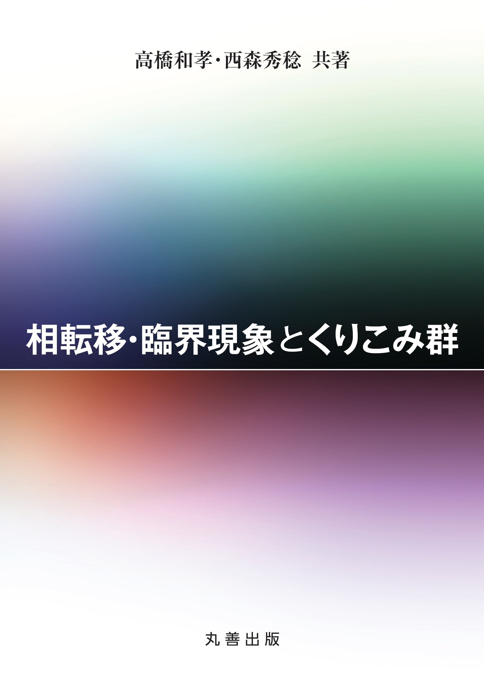
統計力学はミクロな粒子の集団からマクロな熱力学的性質がどう現れるかを説明する分野です。個々の粒子は単純に動いていても膨大な数が集まると相転移や臨界現象のような全く新しい振る舞いが現れます。物性物理，化学，情報，生命現象にまでつながるかなり射程の広い分野です。
扱う本の例：
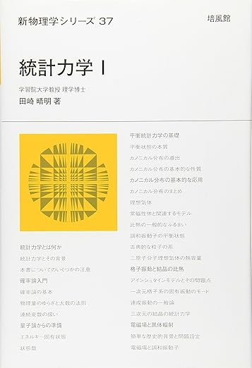
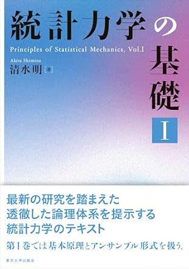
古典力学の主張を最も統一的な記法であるラグランジアンに落とし込む分野です。その内容は，その後対称性と保存則，量子力学，場の理論，統計力学へ直結するものであり，現代物理学の共通言語を成しています。
扱う本の例：
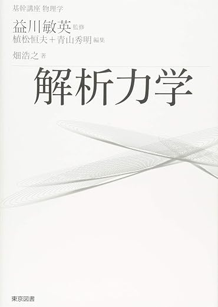
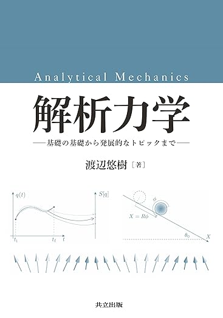
「分子光化学の原理」(丸善出版)という本で有機分子系の光化学について学びます。光の吸収・発光に関わる諸過程の定性的解釈や，光吸収で起きる様々な反応を含む光物理過程について追う予定です。
扱う本の例：
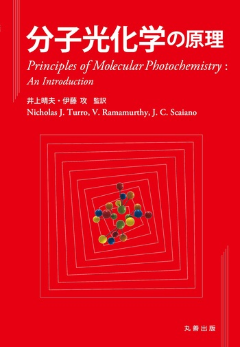
マクロな系を支配する原理として平衡熱力学を学びます。どの本を取り扱うかは未定ですが，基礎的なところから丁寧に追いたいと考えています。そのため，前提知識は特にありません。初学者の方も大歓迎です！
扱う本の例：
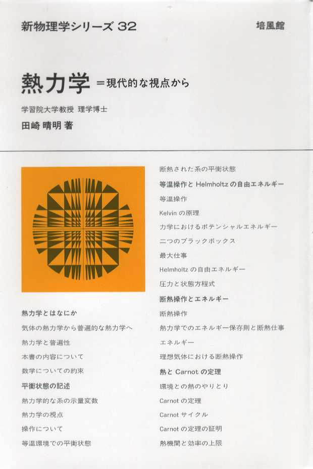
平衡状態で確立された統計力学を、非平衡状態でも扱えないかと拡張されたのが非平衡統計力学です。いまだ完成された理論はないものの，確率過程や情報理論の手法を用いた非平衡系の記述について学ぶことができます。
扱う本の例：
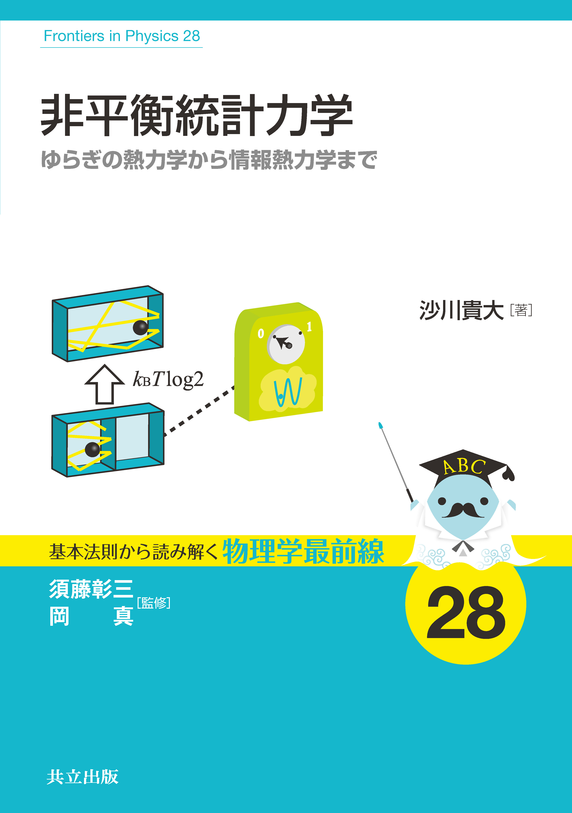
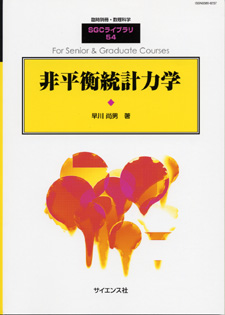
数学において証明された命題は「正しい」として扱われるが，逆に正しい命題はすべて「証明できる」のであろうか？証明と論理を扱い，数学を批判的にとらえるのが数理論理学です。1つの帰結である不完全性定理の理解を目指します。
扱う本の例：
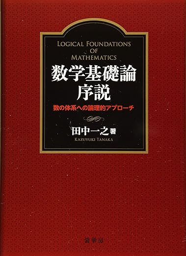
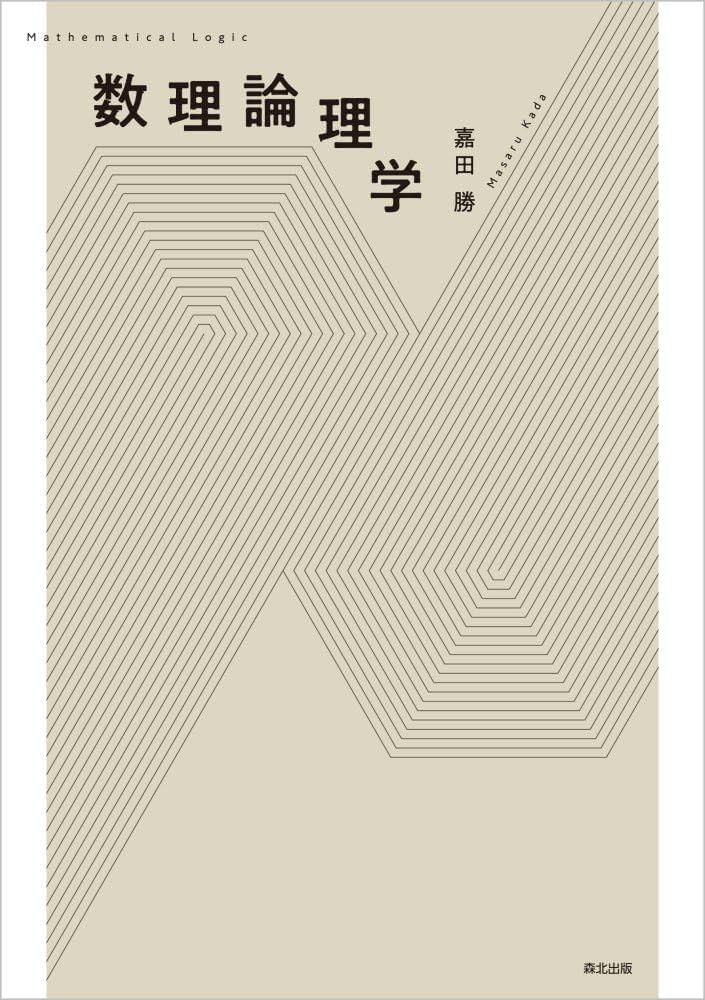
数学で扱う対象を厳密に説明するものが集合で，集合に「開集合」の概念を導入し，連続性や収束について扱うのが位相空間論です。現代数学の基礎を構築し，解析学や幾何学の土台となる分野ですが，位相空間自体の面白さをぜひ味わいましょう！
扱う本の例：
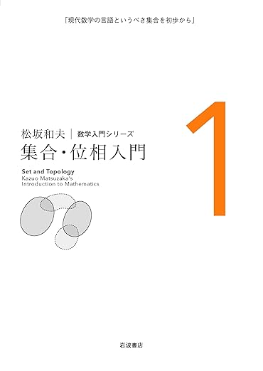
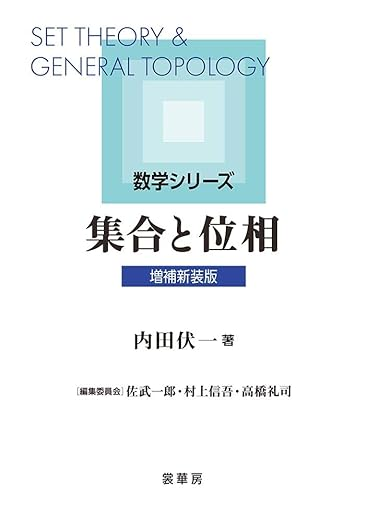
粗幾何学は空間の局所的な構造ではなく，大きなスケールで見た時の幾何学的性質を考える分野です。応用先は広く，解析する手段も様々なものを用いることができる注目の分野ですね！
扱う本の例：
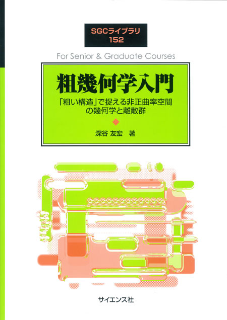
ベトナム語はベトナムの公用語で，話者数は約9000万人と言われています。音の種類や声調が豊かで，歌のように喋る言語とも形容されます。
扱う本の例：
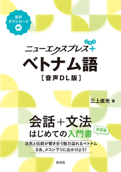
6thでは，野外炊事を行います！

野外炊事の様子（りゼミ2nd）